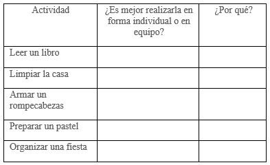

Experiencias

¿Qué vimos hoy?


Geografía
Martes 28 de Abril
Responde las siguientes preguntas y guárdalas en tu carpeta de experiencias para que, en cuanto sea posible, se las entregues a tu maestra o maestro.
Del video Problemas ambientales en México:
- ¿Qué ha ocurrido en los últimos años con los bosques de Tabasco en México?
- ¿Qué ha pasado con los suelos en el norte y noroeste del país en los últimos años?
- ¿Qué pasa si deja de existir una especie animal en México?
- ¿Crees que tú y tu familia podrían hacer algo para resolver alguno de estos problemas? o ¿podrían resolver algún otro problema ambiental? ¿Cuál?
Del video Corazón del monte: la selva Lacandona:
- ¿Qué pasó en 1970 con la selva en Chiapas?, ¿y en 1978?
- ¿En qué consiste la riqueza de la Selva Lacandona?
- ¿Te parece que los seres humanos viven en armonía con la naturaleza?, ¿qué se tendría que hacer para vivir en armonía con la naturaleza?
- Inventa una pregunta sobre algo más que te interese saber.
Actividades adicionales
Si quieres practicar más sobre este tema, te invitamos a realizar la siguiente actividad:
Escoge uno de los siguientes temas para que investigues sobre él.
- Especies en peligro de extinción en México.
- La contaminación del agua.
- La tala de árboles.
Indaga en qué consiste ese problema ambiental, cómo afecta al medio ambiente y qué podemos hacer para solucionarlo. Haz un dibujo que represente lo que investigaste. Puedes consultar tu libro de texto, otros libros que tengas en tu casa, internet, o también puedes obtener información de los videos que acabas de ver.
Platica con tu familia sobre lo que aprendiste, seguro les parecerá interesante y podrán decirte algo más.
Video 1.- Problemas ambientales en México
https://youtu.be/VB_izRKp9Ug
Video 2.- Corazón del monte: la selva Lacandona
https://youtu.be/AThyldXCAxY
Ciencias
Martes 28 de Abril
Responde las siguientes preguntas y guárdalas en tu carpeta de experiencias para que, en cuanto sea posible, se las entregues a tu maestra o maestro.
Del video Cotidiáfonos – Proyecto G:
- ¿Qué instrumento te gustaría elaborar?
- ¿Qué materiales necesitas? De preferencia utiliza materiales reciclables.
- ¿Cómo lo construirás para que tu instrumento produzca tonos y timbres diferentes?
- ¿Qué nombre le pondrías al instrumento de acuerdo con las características del sonido que emite?
Del video Toco con todo: Globinete - Canal Pakapaka:
- ¿Qué instrumento se elabora en el video? Describe su procedimiento
- ¿Qué características tiene el sonido que produce?
- ¿Cómo es el tono que produce?
- ¿Cómo es su timbre e intensidad?
Elabora el instrumento de acuerdo a lo planeado en las preguntas 1 a 4, y contesta lo siguiente:
- ¿Cómo funciona? ¿Resiste el uso?
- ¿Qué dificultades encuentras en su uso, y cómo lo resolviste?
Platica con tu familia sobre lo que aprendiste, seguro les parecerá interesante y podrán decirte algo más.
Video 1.- Cotidiáfonos – Proyecto G
https://youtu.be/aD3cFjryF_Q
Video 2.- Toco con todo: Globinete - Canal Pakapaka
https://youtu.be/dbQrt1Tb6QM
Física
Martes 28 de Abril
Responde las siguientes preguntas y guárdalas en tu carpeta de experiencias para que, en cuanto sea posible, se las entregues a tu maestra o maestro.
Del video Competir vs cooperar (Valores de la EBC):
- Pregúntale a alguno de tus familiares ¿qué es cooperar?
- Explícale tú ahora, con tus palabras qué significa cooperar y sus ventajas en el juego u otra actividad.
- Piensa y escribe en tu hoja, alguna situación en la que tú y tu familia tiene que cooperar.
Del video La pelota viajera: dinámica de cooperación y creatividad:
- Pon en práctica con tu familia, la actividad que viste en el video.
- ¿Por qué es importante la cooperación activa en un juego o en otra tarea? Explica con un ejemplo
- ¿Por qué crees que es más divertido hacer alguna actividad en compañía de otras personas?
Del video Circuito kids. Psicomotricidad en Casa:
- Diseña con tu familia un recorrido como el que observaste en el video y, luego, es momento de intentar superar las pruebas.
- ¿Qué retos o dificultades enfrentaron al realizar las actividades?
- ¿En qué situaciones tuvieron que cooperar?
- Explica la importancia de la participación y cooperación en los juegos y en las actividades de la vida diaria.
En tu tiempo libre inventa otros juegos y actividades que te ayuden a ti y a tu familia a pasar el rato y seguir aprendiendo.
Actividades adicionales
Si quieres aprender más sobre este tema, te invitamos a realizar la siguiente actividad:
Completa el siguiente cuadro donde se presentan distintas actividades; señala si crees que esa actividad es mejor realizarla de manera individual o en equipo y explica por qué.

Platica con tu familia sobre lo que aprendiste, seguro les parecerá interesante y podrán decirte algo más
Video 2.- La pelota viajera dinámica de cooperación y creatividad:
https://youtu.be/QRs0KqC-tlI
Video 3.- Circuito kids. Psicomotricidad en Casa
https://youtu.be/RoaYVddZUCs
Artes
Martes 28 de Abril
Responde las siguientes preguntas y guárdalas en tu carpeta de experiencias para que, en cuanto sea posible, se las entregues a tu maestra o maestro.
Del video Los cuerpos geométricos para niños - Vocabulario para primaria:
- Un cuerpo tridimensional tiene volumen, es decir, no es plano, ¿cuántos cuerpos geométricos recuerdas que se mostraron en el video? Escribe sus nombres.
- Una figura plana no tiene volumen. Piensa en tu vida diaria y escribe tres ejemplos de figuras planas.
- ¿Logras identificar la diferencia entre las figuras planas y las tridimensionales? Explica.
Del video Figurativo y abstracto | Clases de artes para niños | Capicúa:
- ¿Qué es el arte figurativo? Explica.
- ¿Qué es el arte abstracto? Explica.
- Si tuvieras que hacer una escultura, ¿sería figurativa o abstracta? Explica por qué.
Del video Zamba: Excursión al Museo de Bellas Artes-Fernando Botero-Canal Pakapaka:
- ¿Qué pasos sigue Botero para hacer sus esculturas?
- ¿Las esculturas de Botero son figurativas o abstractas?
- Crea una obra de arte a partir de los elementos vistos en este programa. Posteriormente comenta que figuras geométricas predominan en tu obra y si se trata de una obra figurativa o abstracta.
Video 1.- Los cuerpos geométricos para niños
https://youtu.be/5GLduNQ5kA4
Video 2.- Figurativo y abstracto
https://youtu.be/xa7PoZRYRng
Historia
Viernes 24 de Abril
- ¿Qué te parecieron los videos?
- ¿Recuerdas cuando has sentido algunas de las emociones -como alegría, tristeza o miedo que se mencionan en los videos? Escribe o dibuja tus experiencias.
- El rostro cambia con las emociones. ¿Cómo te ves cuando estás enojado? ¿Y cuando estás alegre?
¡A dibujar caritas! - Platica con quien más confianza le tengas sobre las situaciones que no te gustan y te hacen sentir mal y busquen formas para evitarlas
¿Qué tal si elaboras una máscara que represente alguna de las emociones del video? ¿De qué color sería?
¡Manos a la obra!
¿Para qué sirven las emociones?
Fundación PAS
https://www.youtube.com/watch?v=zhp2E6FL3kw
Cuento El Monstruo de Colores
#Aprende las Emociones
https://www.youtube.com/watch?v=__NmMOkND8g